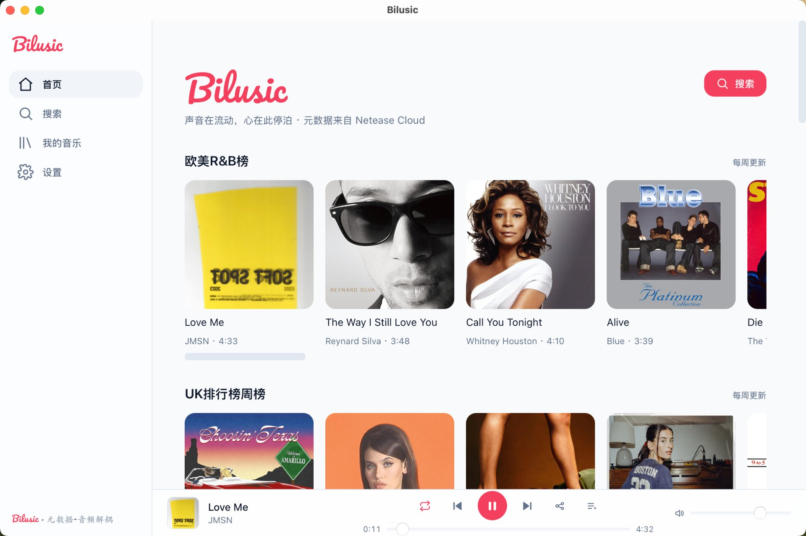

A lightweight, open-source desktop music player with pluggable audio sources. Stream across services with a clean, cross-platform experience.
Everything you need, nothing you don't.
Switch between multiple built-in source plugins as your playback backend.
Extend metadata providers and audio engines with declarative, JS, or WASM plugins.
Follow the system appearance or switch manually. The UI adapts automatically.
Auto-match track info and synced lyrics, with a multi-language interface.
Built with Tauri 2 (Rust + Web). Small, fast, and truly native.
Search songs, albums, playlists, and artists across all your sources.
A clean, focused listening experience.

Free and open-source. Pick your platform.
Tauri 2 Rust React 18 TypeScript Vite Tailwind CSS Zustand